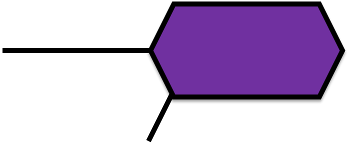

<!-- This is pure html -->
<div id="people_panel">
	<div class="header">
	<h1>People</h1><div class="accent_image_container"></div>
	</div>
	<hr>
	<h2>
		Academic Staff
	</h2>
	<ul>
		<li><a href="http://www.cs.bham.ac.uk/~mgl">Mark Lee</a> (School of Computer Science)</li>
		<li><a href="http://www.cs.bham.ac.uk/~vxs">Volker Sorge</a> (School of Computer Science)</li>
		<li><a href="http://www.birmingham.ac.uk/staff/profiles/education/wilkinson-sandy.aspx">Sandy Wilkinson</a> (School of Education)</li>
	</ul>
	<h2>
	<h2>
		Researchers
	</h2>
	<ul>
		<li><a href="http://www.cs.bham.ac.uk/~igb986">Ian Batten</a></li>
		<li><a href="http://www.cs.bham.ac.uk/~bxs442">Behrang Sabeghi Saroui</a></li>
		<li><a href="http://www.cs.bham.ac.uk/~jts100">John Saxon</a></li>
	</ul>

	<h2>
		Students
	</h2>
	<ul>
		<li>Basak Oren</li>
	</ul>

	<h2>External Collaborators</h2>
	<ul>
		<li>Duncan Bell</li>
		<li><a href="http://people.brunel.ac.uk/~csstnns/">Noureddin Sadawi</a> (Brunel University)</li>
		<li><a href="https://blogs.ch.cam.ac.uk/pmr/">Peter Murray-Rust</a> (University of Cambridge/Shuttleworth Foundation)</li>
		<li><a href="http://chem-bla-ics.blogspot.co.uk">Egon Willighagen</a> (Maastricht University)</li>
	</ul>
</div>
<div id ="related_projects_panel">
	<h1>Related Projects</h1> <hr>
	<ul>
		<li><a href="http://www.cs.bham.ac.uk/~nms/img2mol.php">MolRec</a></li>
		<li><a href="http://sourceforge.net/projects/cdk/">The Chemical Development Tool</a></li>
		<li><a href="http://openbabel.org/wiki/Blue_Obelisk">Blue Obelisk</a></li>
		<li><a href="http://diagramcenter.org">Diagram Center</a></li>
		<li><a href="https://load2learn.org.uk">Load2Learn</a></li>
	</ul>
</div>
<div id = "publications_panel">
	<h1>Publications</h1> <hr>
	<ul>
      <li><a href="http://"></a></li>
	</ul>
</div>

<div id = "funding_panel">
	<h1>Funding</h1><hr>
	<ul>
	  Funded by an SBRI grant "Ready Steady STEM" through JISC TechDis.
	</ul>

</div> 


